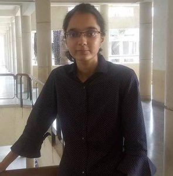

About us

Siddhi Brahmbhatt
Machine Learning | Computer Vision
I am interested in research that involves creating novel datasets and applying ML/DL algorithms to solve real-world problems.
Yagnesh Patil
Developer | AI enthusiast
A Nature lover & Astrophile. Enthusiast in field of computer engineering (specifically, Software Development & Machine Learning)